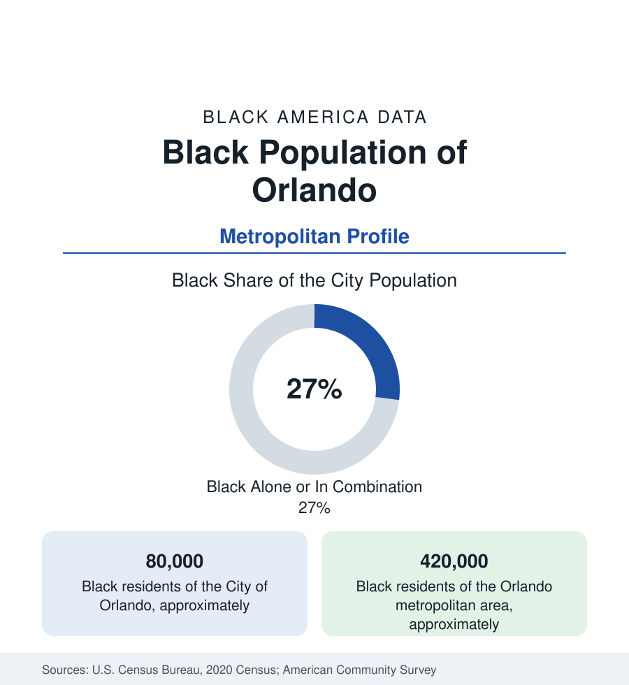

Black Cities
Black Orlando: Parramore, Eatonville, and the Tourism Workforce
Orlando holds about 80,000 Black residents in the city and 420,000 across the metro — from America's oldest Black town to the theme-park economy. The census profile.

Orlando holds about 80,000 Black residents within the city — Black alone or in combination, roughly 27 percent of its 307,000 people — and about 420,000 across the metropolitan area, one of the larger Black metro populations of the South. The profile spans the full arc of this reference's themes in one metro: the oldest self-governing Black town in America at its edge, a historic downtown district at its center, and the largest tourism workforce on earth as its economic engine.
The metro figure counts Orange, Osceola, Seminole, and Lake counties — the four-county area the Census Bureau draws around the city — whose combined Black population places Orlando among the fifteen largest Black metro populations in the nation.
Eatonville and Parramore
Eatonville, six miles north of downtown, was incorporated in 1887 by its Black residents — the first all-Black town incorporated in the United States — and raised Zora Neale Hurston, whose Eatonville is the setting and source of her folklore work and whose name the town's annual Zora festival carries worldwide. It remains a small, majority-Black municipality of about 2,500 inside the metro's sprawl, preserved as a heritage site of national literary significance. Inside Orlando proper, Parramore — the district west of downtown along the street of the same name — was the segregation-era Black center: its Division Street businesses, churches, and Jones High School (the city's Black high school of the era, still operating) formed the complete civic world, and its modern data carry the district's familiar position beside a booming downtown: the sports district's stadiums stand in Parramore, its housing values rise with the core, and its legacy residents' hold on the neighborhood is the city's standing equity file.
The Metro's Distribution
The modern Black Orlando is a four-county population. Orange County holds the mass — the city districts (Pine Hills, the metro's largest Black suburban community, a mid-century suburb turned majority-Black district of some 60,000-plus; Oak Ridge, Holden Heights, Washington Shores, and the Mercy Drive corridor), the east-side subdivisions, and Apopka's growing community. Osceola County (Kissimmee) adds the tourism corridor's workforce communities at rising shares; Seminole (Sanford — a historic Black community of the celery era at Goldsboro, one of Florida's oldest Black towns, folded into Sanford's data — and Altamonte) and Lake County add the rest. The composition is the Florida pattern squared: a deep native-born base, one of the nation's largest Haitian communities (Orlando's Haitian population rivals Miami's growth rate), Puerto Rican communities counted partly in the Black totals by self-identification, and West Indian and African layers throughout.
The Tourism Economy's Workforce
Orlando's Black employment runs through the largest tourism labor market in the world — the theme parks, hotels, and convention economy of the International Drive and Lake Buena Vista corridor — layered with health care (the hospital systems and Medical City at Lake Nona), the simulation-and-defense tech cluster, and the public sector. The wage data carry the industry's signature: a metro median pulled down by hospitality's structure, a Black workforce concentrated in its service tiers, and a union and wage-floor fight (the parks' negotiated minimums) whose outcomes are tracked in the earnings data as the metro's most consequential labor story. The counterweight is the professional layer's growth — Lake Nona's medical and corporate campuses, the downtown tech scene — and a Black business layer (Pine Hills' and Parramore's commercial corridors, the metro's Black chamber) building at the scale the population warrants.
Change and the Estimates
Orlando's Black population is among the fastest-growing in absolute terms of any metro in this section — the estimates add tens of thousands per census cycle across the suburban counties — with the Haitian and broader Caribbean streams and domestic migration from the Northeast and Midwest (the I-4 corridor's retirees and families) compounding. The age structure is young; the school data of Orange and Osceola counties (Black enrollments in the tens of thousands, Haitian Creole among the districts' top home languages) are the profile's future tense.
Reading the Orlando Numbers
Orlando's profile holds the section's most complete arc in a single metro: the town that proved Black self-governance in 1887, the district that segregation built and downtown's boom now reprices, and a 420,000-person modern population working the world's largest visitor economy. Hurston's Eatonville and the theme parks are thirty minutes apart; the data insist they are one subject.
More in Black Cities
Black Atlanta: Population, Distribution, and Growth of a Black Metropolis
Metro Atlanta holds more than two million Black residents — roughly one in three, second only to New York. The suburban distribution, migration history, and composition of Black Atlanta in the census data.
Black New York: The Largest Black Population in America
The New York metropolitan area holds about 3.4 million Black residents — more than any metro in the nation — and the city itself about two million. The census profile.
Black Washington: The District and the Metro
The Washington metro holds about 1.6 million Black residents, and the District itself — long a majority-Black city — now records a Black share near 41 percent. The census profile.
Source: U.S. Census Bureau, 2020 Census; American Community Survey; Population Estimates Program.